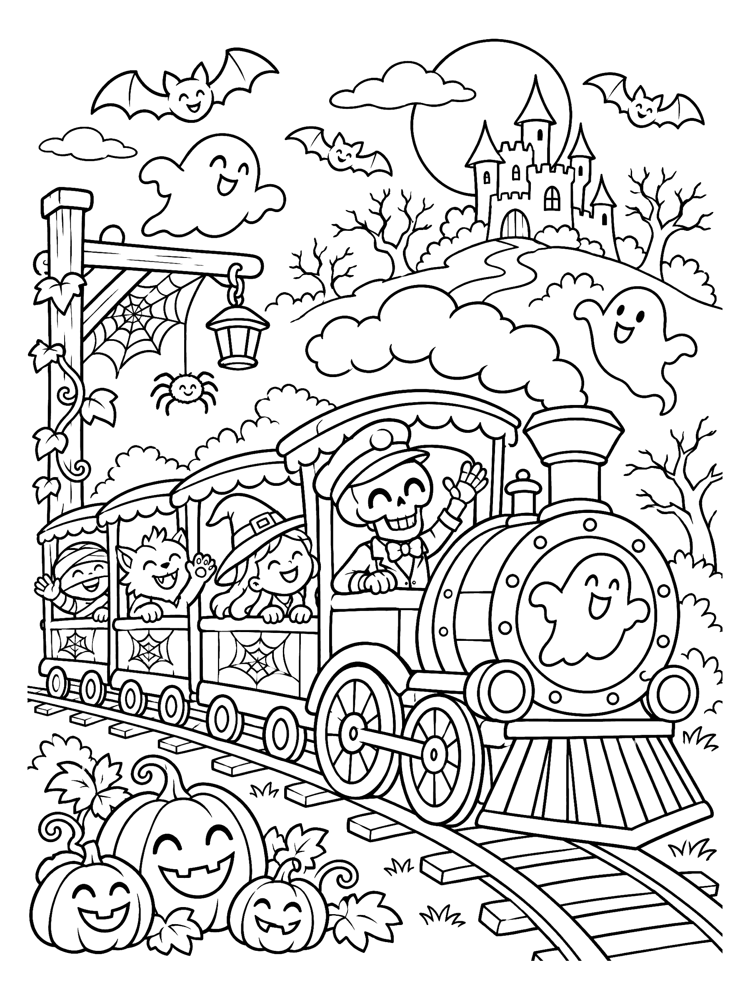
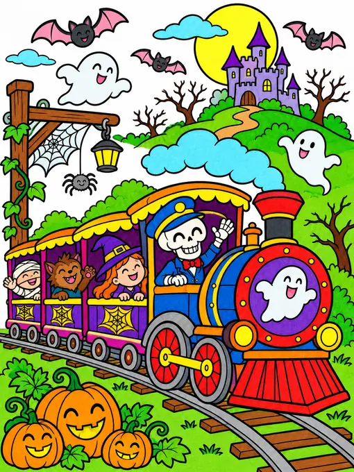

Ghost Train Coloring Page
Whimsical Free printable · Letter and A4
A spooky-cute ghost train ride with bats, cobwebs, friendly skeleton conductor and pumpkins along the tracks.

Color ideas
Here is one way to color it. Good colors to pull out: brown, orange, lime, forest green, navy, dark brown.
Want this small colored picture printed in the corner of the page as a guide? Open the print options and switch on Color guide.
About this page
A storybook scene with medium detail and plenty to find. Great for kids about 6 to 10.
It prints on one sheet of regular paper. For markers, use heavier paper or put a spare sheet underneath. In the print options you can also print two per sheet, switch to light gray lines, or add a name line.